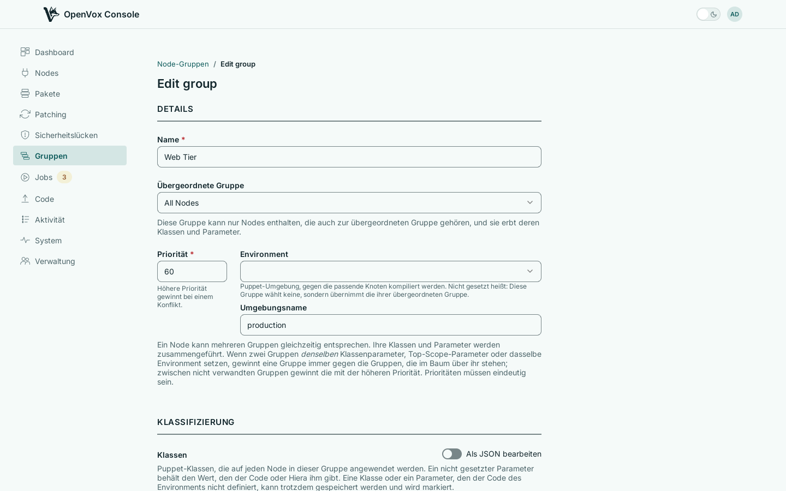

Nutzung
Nodes klassifizieren
Legen Sie fest, welche Klassen, Parameter und welches Environment jeder Node erhält, mit einem Baum aus Node-Gruppen, die per Facts zutreffen oder per Namen fest zugewiesen werden.
openvoxserver fragt die Konsole, was jeder Node sein soll: welche Klassen er einbindet, mit welchen Parametern, und aus welchem Environment sein Code stammt. Die Konsole antwortet aus ihren Node-Gruppen. Die Klassifizierung erreicht openvoxserver erst, wenn sie angebunden ist, was beide Installationsanleitungen beschreiben.
Gruppen anzusehen erfordert classifier:read; sie zu erstellen, zu ändern und zu löschen erfordert classifier:write.
Gruppen bilden einen Baum
Jede Gruppe hat eine übergeordnete Gruppe. Ganz oben steht All Nodes, eine eingebaute Gruppe, zu der jeder Node gehört. Sie können sie nicht löschen, umbenennen oder verschieben, und sie hat weder Regel noch fest zugewiesene Nodes, aber Sie können ihr Klassen, Parameter und ein Environment geben, die dann für die gesamte Flotte gelten.
Eine Gruppe kann nur Nodes enthalten, die auch in ihrer übergeordneten Gruppe sind. Eine Gruppe unter Linux Servers erfasst also nie einen Windows-Node, egal was ihre eigene Regel sagt, und die Nodes einer Gruppe sind immer eine Teilmenge derer ihrer übergeordneten Gruppe. Eine neue Gruppe kommt direkt unter All Nodes, sofern Sie keine andere übergeordnete Gruppe wählen.
Eine Gruppe kann nicht unter sich selbst oder unter eine ihrer Untergruppen verschoben werden, und eine Gruppe, die noch Untergruppen hat, kann nicht gelöscht werden: Verschieben oder löschen Sie diese zuerst.
Eine Gruppe, auf der eine Rolle gewährt ist, kann ebenfalls nicht gelöscht werden, weil das stillschweigend den Zugriff entziehen würde, den die Rolle gibt. Entfernen Sie die Gruppe zuerst auf der Seite Rollen aus der Rolle – siehe Benutzer, Rollen und Tokens.
Wie eine Gruppe entscheidet, für welche Nodes sie gilt
Eine Gruppe gilt für einen Node, wenn der Node in der übergeordneten Gruppe ist und entweder:
- der Node ihr per Namen fest zugewiesen ist, oder
- die Facts des Nodes die Übereinstimmungsregel der Gruppe erfüllen: alle ihre Bedingungen oder mindestens eine davon, je nach Einstellung der Gruppe.
Eine Gruppe ohne Bedingungen und ohne fest zugewiesene Nodes gilt für überhaupt keinen Node. Eine leere Regel bedeutet bewusst nicht „alle“, damit eine halbfertige Gruppe nicht die Flotte übernehmen kann.
Eine feste Zuweisung übersteuert die eigene Regel der Gruppe, nicht ihre übergeordnete Gruppe. Ein Node, der einer Gruppe fest zugewiesen ist, deren übergeordnete Gruppe ihn nicht enthält, ist nicht in der Gruppe, und die Seite der Gruppe listet solche Zuweisungen auf, damit eine wirkungslose nicht unbemerkt bleibt.
Jede Bedingung vergleicht einen Fact mit einem Wert:
| Operator | Trifft zu, wenn der Fact |
|---|---|
= |
dem Wert entspricht |
!= |
sich vom Wert unterscheidet |
~ |
als regulärer Ausdruck auf den Wert passt |
> < >= <= |
vergleicht auf diese Weise, numerisch, wenn beide Seiten Zahlen sind |
Facts werden über ihren Pfad benannt, mit Punkten für strukturierte Facts: os.family, os.release.major, networking.domain.
Eine Gruppe erstellen
- Öffnen Sie Gruppen und erstellen Sie eine Gruppe.
- Benennen Sie sie, wählen Sie ihre übergeordnete Gruppe und ihr Environment, falls sie eines setzen soll. Das Environment ist eine Auswahlliste. Nicht gesetzt (mit dem Hinweis, was die Gruppe dann von ihrer übergeordneten Gruppe erbt) überlässt die Wahl der übergeordneten Gruppe. Darunter stehen die Environments, die openvoxserver meldet. Andere... öffnet ein Textfeld für einen Namen, der noch nicht aufgeführt ist, etwa einen gerade gepushten Branch, oder für den Fall, dass die Liste nicht geladen werden konnte.
- Fügen Sie Klassen hinzu, jeweils mit den benötigten Parametern, sowie etwaige Top-Scope-Parameter. Siehe unten Klassen auswählen.
- Erstellen Sie ihre Übereinstimmungsregel, eine Bedingung pro Zeile: ein Fact-Pfad, ein Operator und ein Wert. Wählen Sie, ob ein Node alle Bedingungen oder mindestens eine der Bedingungen erfüllen muss. Der Editor verweigert das Speichern einer Bedingung ohne Fact-Pfad oder mit einem regulären Ausdruck, der sich nicht kompilieren lässt, und zeigt, welche Zeile falsch ist.
- Weisen Sie alle Nodes per Certname fest zu, die unabhängig von ihren Facts dazugehören sollen.
- Geben Sie ihr eine Priorität und speichern Sie.


Die Gruppenliste zeigt den Baum, jede Gruppe unter ihrer übergeordneten Gruppe, mit der Zahl der Nodes, auf die sie gerade zutrifft, sodass eine Regel, die auf nichts oder auf alles zutrifft, sofort sichtbar ist.
Als JSON bearbeiten zeigt die Regel als rohes JSON, um eine Regel einzufügen oder eine Form zu schreiben, die der Zeileneditor nicht anbietet. Die Prüfungen entsprechen denen des Zeileneditors: Eine als JSON oder über die API gespeicherte Regel mit leerem Fact-Pfad oder fehlerhaftem regulären Ausdruck wird angenommen und trifft einfach nie zu.
Klassen auswählen
Die Konsole liest die Klassen, die Ihr deployter Code definiert, von openvoxserver, sodass die Klassen einer Gruppe ausgewählt und nicht eingetippt werden.
- Beginnen Sie unter Klassen in Klasse hinzufügen zu tippen, wählen Sie die Klasse und fügen Sie sie hinzu.
- Um einen ihrer Parameter zu setzen, wählen Sie ihn unter Parameter setzen. Das erscheinende Feld passt zum Typ des Parameters: eine Auswahl für Boolean oder Enum, eine Zahl für Integer oder Float, Text für String. Sein Hinweis zeigt den Typ und den Default aus dem Code. Jeder andere Typ wird als JSON eingegeben, Text braucht also doppelte Anführungszeichen:
"value",["a", "b"]. - Lassen Sie einen Parameter weg, um den Wert zu behalten, den der Code oder Hiera ihm gibt. Entfernen Sie einen Parameter, um dorthin zurückzukehren.
Die Klassen stammen aus dem Environment der Gruppe: ihrem eigenen, sonst dem der nächsten übergeordneten Gruppe, die eines setzt, sonst production. Die Seite nennt, welches es ist und wann die Liste gelesen wurde. Ein Node, der auch auf eine andere Gruppe mit einem anderen Environment zutrifft, kompiliert gegen dieses, was die Gruppe nicht wissen kann.
Die Liste wird fünf Minuten lang wiederverwendet und nach einem Code-Deploy neu gelesen. Klassen aktualisieren liest sie sofort und erfordert classifier:write.
openvoxserver hält einen eigenen Cache jedes Environments. Ist er so eingestellt, dass Environments unbegrenzt gehalten werden, wie im Container-Image, erscheint eine durch neuen Code hinzugefügte Klasse erst, wenn dieser Cache geleert wird – dieselbe Leerung, die ein Katalog braucht, um den neuen Code zu sehen. Siehe Installation mit Containern.
Als JSON bearbeiten zeigt die Klassen als rohes JSON, um sie einzufügen.
Klassen, die nicht zum Code passen
Eine Gruppe kann eine Klasse nennen, die das Environment nicht definiert, einen Parameter setzen, den die Klasse nicht deklariert, oder einen Wert angeben, der nicht zum Typ des Parameters passt. Das passiert, wenn eine Klasse im Code umbenannt oder entfernt wird oder wenn die Gruppe gespeichert wird, bevor der Code deployt ist.
Die Seite der Gruppe markiert jede davon, und die Gruppenliste zeigt bei der Gruppe Klassen weichen ab. Das sind nur Hinweise:
- Die Gruppe wird so gespeichert, wie sie ist. Nichts wird entfernt oder geändert.
- Nodes werden weiterhin mit der Klasse klassifiziert. Ein Node, dessen Katalog eine nicht existierende Klasse braucht, lässt sich mit
Could not find classnicht kompilieren, bis der Code oder die Gruppe geändert wird. - Geprüft werden nur Typen, die die Konsole prüfen kann. Ein Wert für einen anderen Typ wird nie markiert.
Nichts wird als fehlend markiert, wenn eines der Manifeste des Environments nicht geparst werden kann, da die Klasse in diesem Manifest stehen könnte. Die Seite listet stattdessen die Manifeste und ihre Fehler auf.
Wenn die Liste nicht verfügbar ist
Die Seite nennt den Grund, und Klassen und Parameter werden per Namen eingegeben. Nichts wird markiert, und Speichern und Klassifizierung funktionieren normal. Die Ursachen:
- Die Konsole hat keine Verbindung zu openvoxserver. Setzen Sie
CONSOLE_PUPPET_SERVER_URL. - openvoxserver erlaubt der Konsole nicht, Klassen zu lesen. Fügen Sie die Regel aus der Installationsanleitung hinzu: Container oder Pakete.
- openvoxserver war nicht erreichbar. Wurde die Liste früher gelesen, wird diese frühere Liste angeboten, als möglicherweise veraltet markiert.
Wenn sich Gruppen überschneiden
Ein Node, der auf mehrere Gruppen zutrifft, erhält alles von allen: jede Klasse, jeden Parameter. Da ein Node in einer Gruppe auch in jeder Gruppe über ihr ist, erbt eine Gruppe alles, was diese Gruppen setzen und sie selbst nicht.
Setzen zwei Gruppen dasselbe unterschiedlich – denselben Klassenparameter, denselben Top-Scope-Parameter oder das Environment –, entscheiden zwei Regeln, in dieser Reihenfolge:
- Eine Gruppe gewinnt immer gegen die Gruppen über ihr. Der Wert eines Kindes schlägt den seines Elternteils, seines Großelternteils und so weiter, unabhängig von deren Prioritäten.
- Zwischen Gruppen, von denen keine über der anderen steht, gewinnt die höhere Priorität.
Eine Gruppe gilt außerdem als mindestens so hoch eingestuft wie ihr Elternteil. Nehmen Sie einen Elternteil mit Priorität 10, sein Kind mit Priorität 1 und eine nicht verwandte Gruppe mit Priorität 5, die alle auf einen Node zutreffen. Das Kind schlägt seinen Elternteil nach der ersten Regel, und es schlägt auch die nicht verwandte Gruppe, weil es als 10 eingestuft wird: Eine Verfeinerung einer Gruppe übertrifft alles, was diese Gruppe übertrifft.
Wenn ein Kind eine höhere Priorität übersteuert
Setzt eine Gruppe etwas anders als eine Gruppe über ihr, die eine höhere Priorität hat, wird trotzdem der Wert des Kindes verwendet, aber die Prioritäten allein hätten etwas anderes ergeben. Die Konsole sagt es Ihnen: Die Seite der Gruppe nennt beim Öffnen oder Speichern die übergeordnete Gruppe und die betroffenen Werte, die Gruppenliste markiert die Gruppe mit Überschreibt Priorität, und die Änderung wird auf der Seite Aktivität vermerkt. Das ist eine Warnung, kein Fehler. Nichts wird abgelehnt, und Nodes werden normal klassifiziert. Um sie zu beseitigen, geben Sie dem Kind die höhere Priorität oder entfernen den Wert aus einer der beiden Gruppen.
Auf All Nodes gesetzte Werte lösen sie nie aus: Von jeder Gruppe wird erwartet, dass sie diese übersteuert.
Konfigurationsdaten setzen
Konfigurationsdaten sind Daten, die Ihr Code mit lookup() liest: ein Wert für ntp::servers, profile::dns::resolvers oder einen anderen Hiera-Schlüssel. Sie auf einer Node-Gruppe zu setzen ändert sie für jeden Node der Gruppe, ohne Commit oder Code-Deploy.
- Öffnen Sie die Gruppe und unter Klassen den Bereich Konfigurationsdaten (JSON).
- Geben Sie ein JSON-Objekt aus Schlüsseln und Werten ein, zum Beispiel
{"ntp::servers": ["0.pool.ntp.org"], "dns::timeout": 5}. Ein Wert kann beliebiges JSON sein: ein String, eine Zahl, ein Boolean, eine Liste, ein Objekt odernull. - Speichern Sie die Gruppe. Nodes übernehmen es bei ihrem nächsten Puppet-Lauf.
Ein Schlüssel besteht aus bis zu 255 Zeichen aus Buchstaben, Ziffern und _ : . -. Eine Gruppe enthält bis zu 1000 Schlüssel, jeder Wert bis zu 64 KiB. Der Schlüssel lookup_options wird abgelehnt: Mit ihm legt Hiera das Merge-Verhalten fest, das Konfigurationsdaten nicht anbieten.
Welchen Wert ein Node erhält
Daten werden aus jeder Gruppe, in der der Node ist, nach denselben zwei Regeln kombiniert, nach denen Klassenparameter kombiniert werden (siehe Wenn sich Gruppen überschneiden): Eine Gruppe schlägt die Gruppen über ihr, und zwischen nicht verwandten Gruppen gewinnt die höhere Priorität. Ein von der gewinnenden Gruppe gesetzter Schlüssel ersetzt denselben Schlüssel der anderen vollständig: Setzen zwei Gruppen app::opts beide auf ein Objekt, werden ihre Objekte nicht Schlüssel für Schlüssel zusammengeführt.
Konsolendaten schlagen das Control-Repo
Ist ein Schlüssel sowohl hier als auch in den Hiera-Daten Ihres Control-Repos gesetzt, wird der Wert der Konsole verwendet. Ein Schlüssel, den die Konsole nicht setzt, wird wie bisher im Control-Repo gefunden. Konfigurationsdaten sind also der richtige Ort für einen Wert, den Sie pro Gruppe übersteuern wollen, und das Control-Repo bleibt der Ort für alles andere.
Nicht für Secrets
Konfigurationsdaten werden als Klartext gespeichert und jedem angezeigt, der Node-Gruppen sehen kann (classifier:read). Legen Sie darin keine Passwörter oder Schlüssel ab. Die Seite Aktivität und das Audit-Protokoll halten fest, welche Schlüssel sich geändert haben, nie deren Werte.
Wenn der Lauf eines Nodes fehlschlägt
openvoxserver fragt die Konsole bei jeder Kompilierung eines Katalogs nach den Daten eines Nodes. Kann die Konsole nicht antworten, schlägt die Kompilierung mit einem Fehler fehl, der die Konsole nennt, statt einen Katalog aus fehlenden Werten zu bauen. Die Installationsanleitungen zeigen, wie der Server für diese Abfrage eingerichtet wird.
Prüfen, was ein Node erhält
Die Seite einer Gruppe listet die Nodes auf, auf die sie gerade zutrifft. Was ein Node letztlich erhält, ist die Zusammenführung aller zutreffenden Gruppen, und die einzige Stelle, die diese vollständige Antwort zeigt, ist enc-bridge selbst: Fragen Sie es auf dem openvoxserver-Host ab, wie es die Installationsanleitungen zeigen, und es gibt genau das aus, was openvoxserver mitgeteilt wird. Die Konfigurationsdaten eines Nodes sind getrennt: GET /api/v1/enc/<certname>/data liefert sie mit demselben Token.
Die Klassifizierung wird beim nächsten Puppet-Lauf des Nodes wirksam. Um sie sofort anzuwenden, starten Sie einen Lauf von der Seite der Gruppe, der Puppet auf jedem Node ausführt, auf den die Gruppe zutrifft; siehe Jobs ausführen.
Jede Änderung an einer Gruppe wird auf der Seite Aktivität verzeichnet, mit der Person, die sie vorgenommen hat.
Upgrade von einer Version ohne Baum
Das Upgrade ändert die Klassifizierung keines Nodes. Jede bestehende Gruppe wird ein direktes Kind von All Nodes, behält ihre Regel, festen Zuweisungen und Priorität und trifft wie bisher bei Erfüllung aller ihrer Bedingungen zu.
Hatten Sie bereits eine Gruppe namens „All Nodes“, wird sie in All Nodes (previous) umbenannt und läuft genau wie bisher weiter, mit ihrer eigenen Regel. Sie wird nicht zur eingebauten Gruppe, denn das würde ihre Klassen auf Nodes anwenden, auf die ihre Regel nicht zutraf. Sobald Sie sie geprüft haben, können Sie ihre Klassen auf die eingebaute All Nodes verschieben und sie löschen.
Betreiben Sie mehrere Konsoleninstanzen, schließen Sie das Upgrade aller ab, bevor Sie eine Gruppe unter eine andere stellen. Eine Instanz, die noch auf der alten Version ist, ignoriert übergeordnete Gruppen und würde allein nach Priorität klassifizieren. Siehe Weitere Instanzen betreiben.